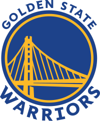

Golden State Warriors
Golden State Warriors so ameriška profesionalna košarkarska ekipa s sedežem v San Franciscu. Bojevniki tekmujejo v Nacionalni košarkarski zvezi (NBA) kot član ligaške zahodne konference pacifiške divizije. Warriors, ustanovljen leta 1946 v Philadelphiji, so se leta 1962 preselili na območje zaliva San Francisco in prevzeli ime mesta, preden so leta 1971 spremenili svoj geografski vzdevek v Golden State. Klub domače tekme igra v Chase Center. Warriors so leta 1947 osvojili prvo prvenstvo Ameriškega košarkarskega združenja (BAA) in ponovno zmagali leta 1956, pod vodstvom trojice Hall of Fame Paula Arizina, Toma Gole in Neila Johnstona. Po zamenjavi zvezdnika Wilta Chamberlaina januarja 1965 je ekipa končala sezono 1964–65 z najslabšim rezultatom lige NBA (17–63). Njihovo obnovitveno obdobje je bilo kratko zaradi tega, ker so Warriors štiri mesece po menjavi naborili Ricka Barryja. Leta 1975 sta zvezdnika Barry in Jamaal Wilkes pognala Warriorse do njihovega tretjega naslova prvaka, kar velja za enega največjih pretresov v zgodovini lige NBA. Ekipa se je v osemdesetih letih prejšnjega stoletja borila, nato pa je na prelomu desetletja z zvezdami Timom Hardawayem, Mitchem Richmondom in Chrisom Mullinom, z vzdevkom "Run TMC", postala redna igralka končnice. Pod vodstvom Stephena Curryja, Klaya Thompsona in Draymonda Greena se je ekipa leta 2015 vrnila k šampionski slavi, obrambni igralec Andre Iguodala pa je bil imenovan za MVP finala. Leta 2016 so Warriors postavili rekord za najboljši rezultat redne sezone pri 73-9, preden so izgubili finale proti Cleveland Cavaliers (proti katerim so igrali rekordne štiri zaporedne finale) in postali prva ekipa, ki je izgubila niz po vodstvu s 3-1. v finalu.
Trenutna ekipa

10. aprila 2022 so Warriors osvojili tretjega nosilca zahodne konference in se tako prvič po sezoni 2018–19 uvrstili v končnico. V prvem krogu so napredovali mimo Denver Nuggets, v konferenčnem polfinalu pa slavili nad Memphis Grizzlies. 26. maja 2022 so Warriors napredovali v svoj sedmi finale lige NBA, potem ko so v finalu zahodne konference premagali Dallas Mavericks s 4–1. 16. junija 2022 je ekipa osvojila svoj sedmi naslov v ligi NBA in premagala Boston Celtics s 4–2. Curry, Thompson, Green in Iguodala so osvojili svoj četrti naslov prvaka kot člani Warriorsov. Leta 2021 so bili Golden State Warriors med drugimi uglednimi športniki in zvezdniki plačani tiskovni predstavniki FTX, menjalnice kriptovalut. Novembra 2022 je FTX vložil zahtevo za stečaj, s čimer je izbrisal milijarde dolarjev sredstev strank. Warriors, skupaj z drugimi predstavniki, so trenutno toženi zaradi promoviranja neregistriranih vrednostnih papirjev prek skupinske tožbe. Februarja 2022 je pritožbeno sodišče 11. okrožja ZDA v tožbi proti Bitconnectu razsodilo, da se zakon o vrednostnih papirjih iz leta 1933 razširi na ciljno nagovarjanje prek družbenih medijev. V sezoni 2022–2023 so se Warriorsi zaradi številnih poškodb soočili z zahtevno redno sezono. Prizadeti so bili ključni igralci, kot so Andre Iguodala, Donte DiVincenzo, Klay Thompson, Draymond Green, Jonathan Kuminga in celo Stephen Curry, ki je trpel zaradi različnih poškodb in ni mogel sodelovati na tekmi zvezd 2023. Kljub povprečni uspešnosti ekipe skozi celotno sezono je moštvo San Francisca pokazalo izjemno odločnost in odpornost. Trdo so se borili in si na koncu zagotovili mesto v končnici ter napredovanje v polfinale zahodne konference.